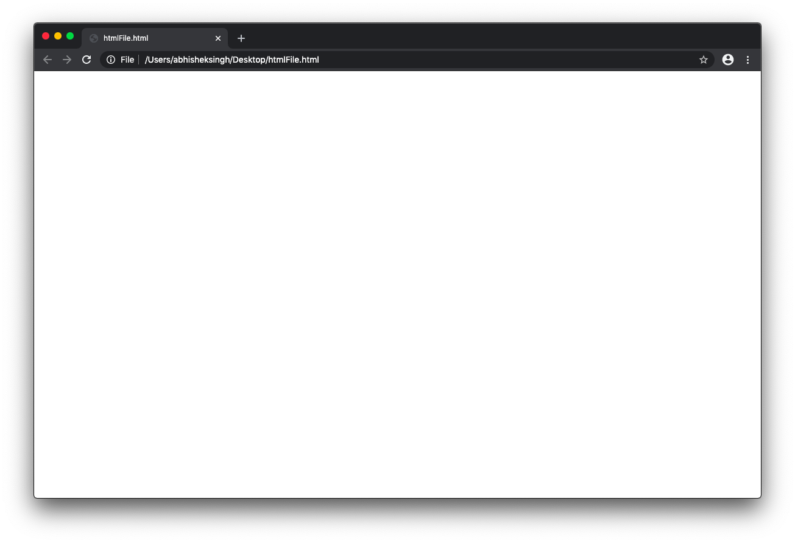
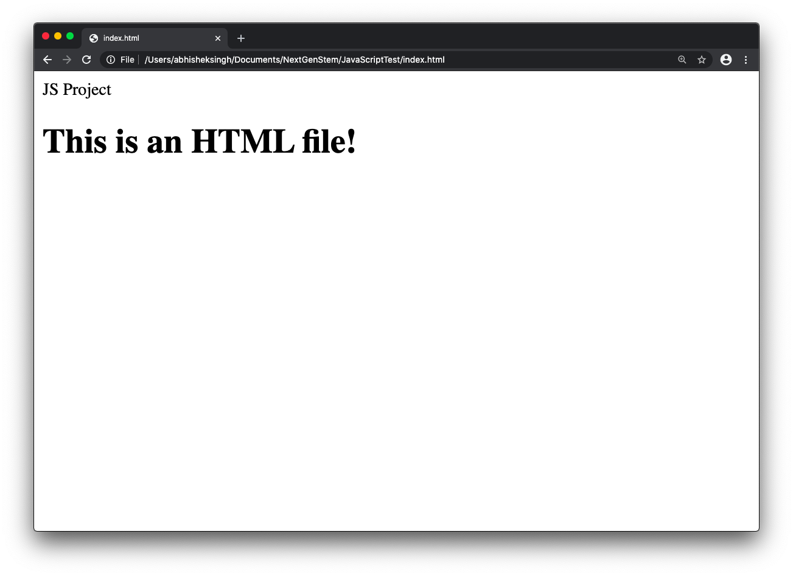
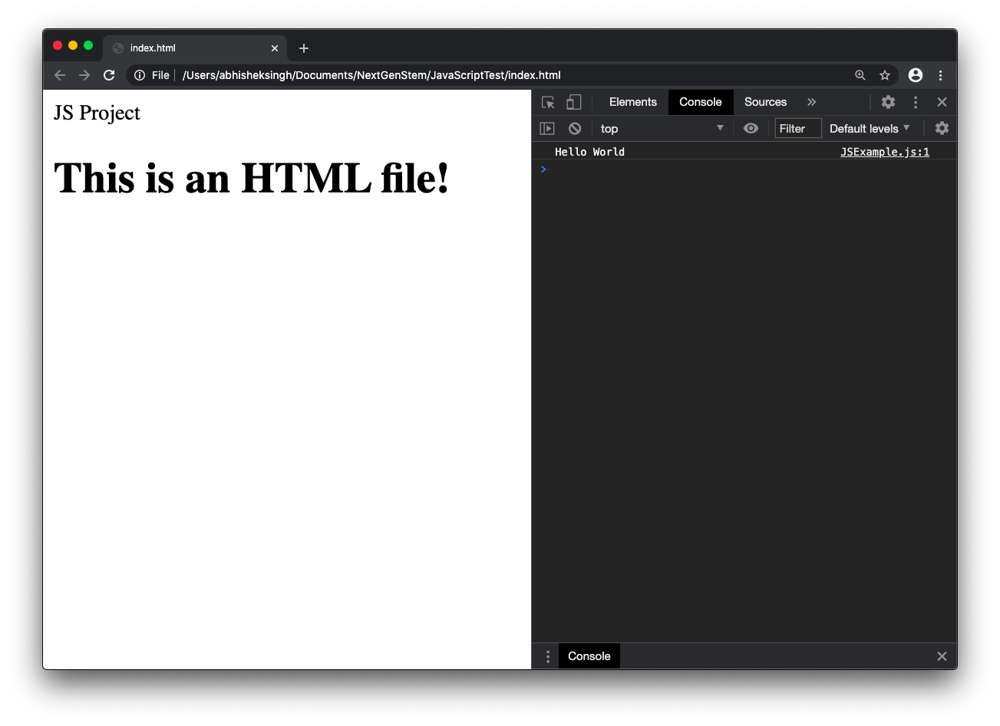

This option works with TextEdit, but you could also use a program like TextWrangler for Mac.
You can create html files with TextEdit on MacOS, and you can run
JavaScript using them. Open TextEdit, go to TextEdit > Preferences,
make sure your settings look something like the images below. The spelling and grammar settings are less
important, but I recommend turning off smart quotes and dashes.
Set up the basic html of a webpage and save the file with the extension .html. Write the
JavaScript code between the <script> </script> tags. You can now open this html
file
in a browser. Do right click > Open with to choose which browser to use. To continue editing
the file, right click it, then Open with > TextEdit.
On windows you can use the default Notepad app or download Notepad++. Save the file with the extension
.html. Double click to open the file in a browser or right click and use Open with
to choose
which browser to use. Here is some example code:
Write JS code between the <script> </script> tags
Opening the example html file in a browser should look like this:

To open the console, do Command + Alt + J on Chrome,
and Command + Alt + K on
Firefox. On Safari, go to Safari > Preferences > Advanced
and activate Show Develop menu in menu bar. Then you can go to
Develop > Show JavaScript Console or Develop > Show Page Source. This is
what it should look like
on Chrome. Notice the Console has printed Hello World as we coded between the script tags.
VS Code is a free and flexible text editor developed by Microsoft, and it will be the main tool used to teach JS in this course. You don't have to use it to learn the basics, but it will be useful for larger projects.
Download VS Code from this link: https://code.visualstudio.com/.
Get further information on the functionality of the program at this link: https://code.visualstudio.com/docs/setup/setup-overview.
When you download and open the program, you will see a welcome page. I recommend playing around with some settings and themes you like. Getting used to any IDE takes time, so don’t be afraid to look up things that you don’t understand.
I recommend creating a folder where you will store all of the files you will create in this course. I named
my folder 1TheNextGenStem. For your first program, inside this folder, create a new folder
called whatever you want. I called mine JavaScriptTest. Go to Open Folder and open
up the JavaScriptTest file, or whatever you named your file.
Click the New File button when you want to add a new file, or right-click, then select the
New File option.
Name the new file something like JSExample.js. The file extension, in this case
.js is important for each file you create. That is how the program knows which language you are
writing with.
Name another new file index.html. Write some basic html in the file to set up
the page. The important line for running JS is the <script src =
“JSExample.js”></script> line. This runs the JSExample.js file on the html
page. You
could also write regular JS between the tags without an external file
Write some code in the JSExample.js file:
Open the file in your browser. You should see this:
Open the console to see that the JavaScript did run. “Hello World” was logged to the console.

You can also write JavaScript directly in the Console. Try entering console.log(“Hello There”);
in the console. You should see “Hello There” appear in the console as output.
I recommend downloading the extension “Live Server” for VS Code. Right click on the html file >
Open with Live
Server or click the live server button on the bottom right to
use the extension. This opens the file in a way such that the browser will update with code
changes without you needing to refresh it. It updates on save. You may want to change your settings to "Save
on delay" for updates without you having to manually save. This isn’t necessary, but it is more
convenient.